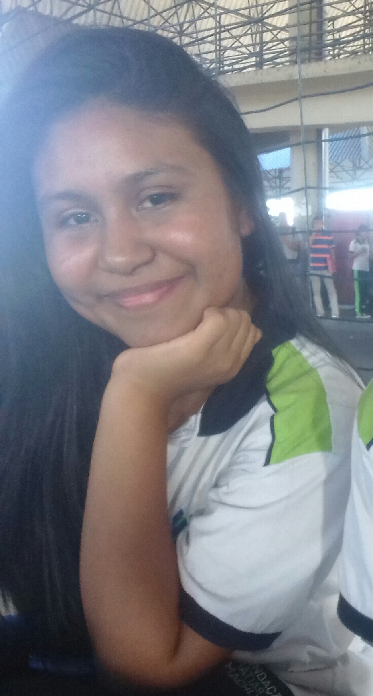
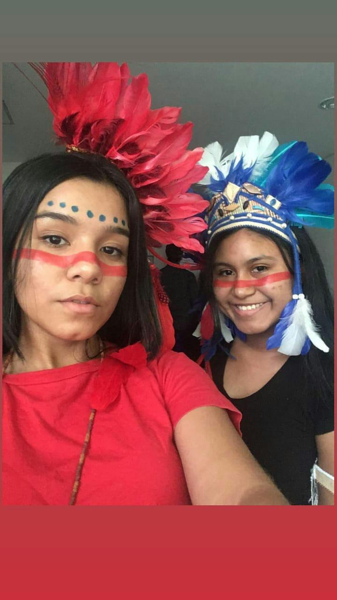
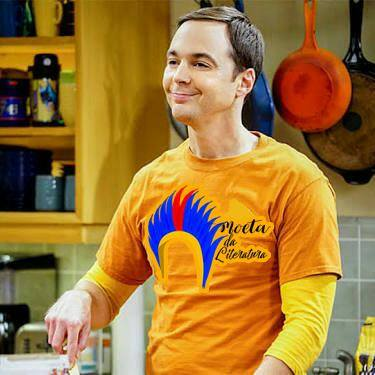
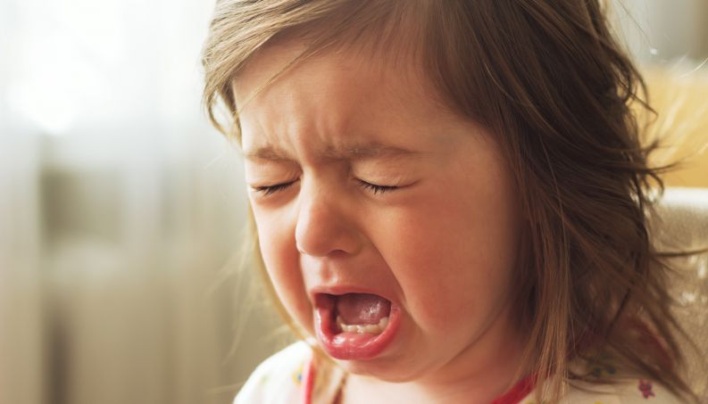

blog eu fui a Moetá, a mascote do blog,
e as apresentações dos blogs foram juntas,
pela primeira vez desde a criação do
projeto,junto com a Iasmyn Bruce consegui
unificar a apresentação.
|  | Curriculum Vitae |
|
Rua Itapiranga 62, Novo Aleixo - Manaus, AM – Brasil
Nascimento: 16 de agosto de 2001
E-mail: artiagor2d2@gmail.com
WhatsApp: +55 92 993084101 Instagram: kamilaartiago
Discord:Kamila #3331 Skype:kamilaartiago16
Ensino Fundamental I
Escola Municipal Dom Luís Soares Viera
Manaus-AM - Brasil
2006-2012
Ensino Fundamental II
CETI - Engenheiro Professor Sérgio Alfredo Pessoa Figueiredo
Manaus-AM - Brasil
2013-2016
Ensino Médio
Fundação Matias Machline
Manaus-AM - Brasil
2017 - Até o presente momento
Projeto Blog
Fundação Matias Machline
Matéria: Língua Portuguesa
Função: Coordenadora de todas as equipes do projeto blog
Março/2018 - Novembro/2018
|
|  |  |
Algumas fotos do Projeto. No dia da apresentação do blog eu fui a Moetá, a mascote do blog, e as apresentações dos blogs foram juntas, pela primeira vez desde a criação do projeto,junto com a Iasmyn Bruce consegui unificar a apresentação. |
Microempreendor
Descrição de Atividade: No atual conexto, eu vendi alguns livros para investir no ramo da papelaria, pois é uma
área que eu entendo e gosto muito. Mês que vem chega minha primeira leva de mercadoria, começaria com brush pen
pois é um mercado que pode crescer muito na escola.
Período: 22 de dezembro de 2018 - Até o presente momento
Principais Clientes: Alunos
Portuguese: Native
Cursos RelevantesFundamentos de Tecnologia- Microsoft Virtual Academy
Informártica Avançada- Fundação Matias Machline(Cursando)
Tipografia
Poesia
Audiovisual
Não tenho
Maior medo em vida|  | Eu tenho inúmeros medos, mas acho que o pior deles é o medo de perder meus pais, não estou e nem quero está preparada para isso. |
Descreva o dia que teve mais Sorte na Vida
aaa Gosta de Animais de Estimação ? Descreva-os,referncie suas raças na web.Qual seu time de coração? Quando começou a torcer para tal? Referencie o nome do seu time com o site oficial dele.
Eu torço para o time Vasco da Gama.
www.vasco.com.br
Sim, Jesus. Porque é um exemplo de humanidade e simplicidade, o que é algo que o mundo
está precisando.
Áudio 1:
Sim.
No momento não sei dizer, mas depois que entrei que percebi qual era a dimensão desse curso
Eu amo o mundo audiovisual, tanto séries quanto filmes! Vou deixar aqui algumas produções que assisto.
Áudio 2:
Informe alguns videos do youtube favoritos seus.
Não sabia que eu gostava até que em 24.08.18 comecei a escrever e gostei bastante.Essa é uma poesia minha que
escrevi para postarem no blog da sala.
www.moetadaliteratura.com